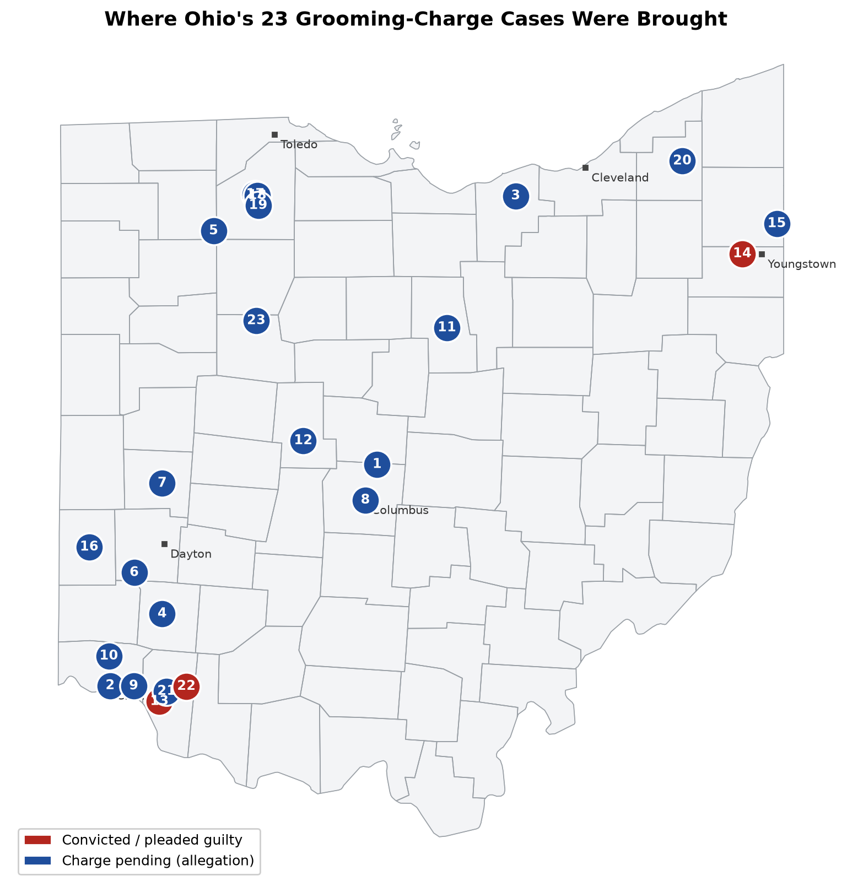
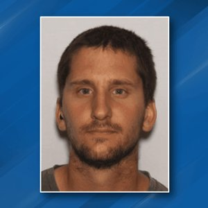
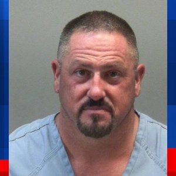
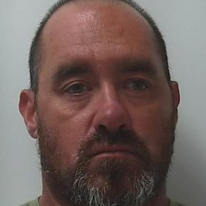
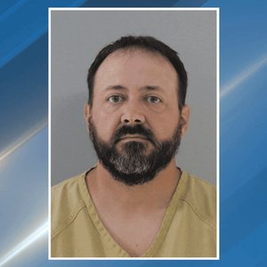
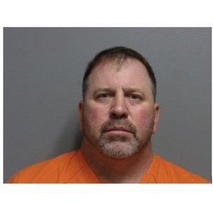
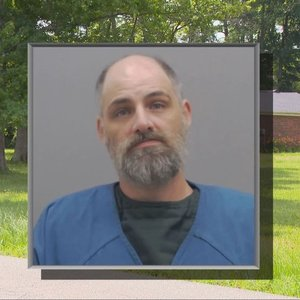

A public record, kept current by a crawler
Charged With Grooming in Ohio
Every Ohioan criminally charged under Ohio's new grooming law, ORC 2907.071, with a source on every case. Ohio made grooming its own crime with House Bill 322, signed January 8, 2025 and in force April 9, 2025. Before that date nobody could be charged with grooming by name, so this page counts only people carrying the actual charge.
33
Charged with grooming
7
Convicted or pleaded
32 of 33
Also face other child-abuse charges
26
Open cases, presumed innocent
Page built 2026-10-10 17:44 UTC. Last news sweep 2026-10-10 17:44 UTC. The crawler runs every six hours. Count as of the latest confirmed case.
Grooming has stood alone only once
In 32 of 33 cases the grooming count sits beside other child-abuse charges. The grooming statute is working as a door: the pattern-of-conduct charge gets investigators into a case that then surfaces the abuse itself. Grooming convictions matter. A grooming charge that delivers rape, sexual battery, or abuse-material convictions matters more, and that is the pattern so far.
| Companion charges beside grooming | Cases | Who |
|---|---|---|
| Hands-on abuse (rape, sexual battery, gross sexual imposition, unlawful sexual conduct) | 21 | Behanan, Telford, Walter, Vanwey, Gonzales, Barton, Souza, Helmer, West, Bingle, Rava, Losoya, Smetana, Hauke, Blair, Rivera-Alejandro, Rowland, Rowland, Carlton, Hair, Adams |
| Exploitation (abuse material, pandering, importuning, trafficking, hidden camera) | 10 | Hartman, Grubbs, Vanderveen, Conley, Banovich, Barnes, Abke, Shuttleworth, McCoy, Moreno |
| Unspecified child sex felonies | 1 | Waldron |
| Grooming only | 1 | Kimball |
Resolved so far: Christopher Helmer (convicted, 9 years); James West (pleaded guilty, sentencing nov 2026); Paul Bingle (pleaded guilty to other counts, 13 to 17 years); James Russell Blair (convicted, 20 years); Brock Abke (convicted, 17 to 21 years); Justin D. Shuttleworth (pleaded guilty to grooming (misdemeanor), felonies dismissed, sentencing jun 2026); James R. Kimball (pleaded guilty to a reduced attempt count, 90 days (75 suspended), 2 years probation).
Where the cases were brought

Numbers match the case list. Red is convicted or pleaded guilty. Blue is pending. Leading counties: Hamilton (6), Wood (4), Clermont (3), Franklin (2), Preble (2). The cluster in southwest Ohio most likely reflects which prosecutors moved fastest to use the new statute, not where grooming happens.
The 33 cases
One sentence each. Click a name to open the source story. Every open case is an allegation; the person is presumed innocent unless and until proven guilty.
-
1
Scott Richard Hartman, 49 · Franklin County
Charged, pending + exploitation charged
Scott Richard Hartman, 49, a former senior executive at the Catholic Foundation of Ohio, was indicted in Franklin County in October 2026 on a grooming charge and child sexual abuse material counts after a sheriff's ICAC investigation, and has pleaded not guilty.
-
2
Keylan Behanan, 26 · Hamilton County
Charged, pending + hands-on abuse charged
Keylan Behanan, 26, a seasonal basketball coach at a Cincinnati charter school, was charged in March 2026 with grooming and two counts of sexual battery involving a minor.
-
3

Joshua Telford, 35 · Lorain County
Charged, pending + hands-on abuse charged
Joshua Telford, 35, of Cincinnati, was indicted in Lorain County in February 2026 on grooming and rape charges for allegedly traveling to abuse a 12-year-old, and is held without bond.
-
4

Michael Waldron, 56 · Warren County
Charged, pending + other child sex felonies
Michael Waldron, 56, of Warren County, was arrested in March 2026 after a traffic stop and charged with twelve felony counts including a grooming-related offense (exact statute not confirmed in reporting).
-
5
Christopher Walter, 52 · Henry County
Charged, pending + hands-on abuse charged
Christopher Walter, 52, a Deshler pastor, was indicted in Henry County in June 2026 on grooming and two counts of sexual battery, and has pleaded not guilty.
-
6

James Ryan Grubbs, 48 · Montgomery County
Charged, pending + exploitation charged
James Ryan Grubbs, 48, a former Valley View softball coach in Germantown, was indicted in Montgomery County in 2026 on a grooming count among more than 150 charges tied to alleged spy-camera recordings of girls.
-
7
Joshua A. Vanwey, 26 · Miami County
Charged, pending + hands-on abuse charged
Joshua A. Vanwey, 26, of Miami County, was indicted in July 2026 on grooming, child endangering, and unlawful sexual conduct charges, and has pleaded not guilty.
-
8
Diego Montoya Gonzales · Franklin County
Charged, pending + hands-on abuse charged
Diego Montoya Gonzales was indicted in Franklin County in August 2026 on grooming, attempted rape, and child enticement charges tied to alleged TikTok contact with a minor, and has pleaded not guilty.
-
9
Steven Barton, 43 · Hamilton County
Charged, pending + hands-on abuse charged
Steven Barton, 43, an assistant principal at Cincinnati's Aiken High School, was indicted in 2026 on six counts of sexual battery and two counts of grooming.
-
10
Diego Vanderveen, 19 · Hamilton County
Charged, pending + exploitation charged
Diego Vanderveen, 19, a former Milford High School custodian, was indicted in Hamilton County in September 2026 on grooming and related charges for allegedly posing as a teenager on Snapchat.
-
11
Joshua A. Conley, 39 · Richland County
Charged, pending + exploitation charged
Joshua A. Conley, 39, of Richland County, was indicted in September 2026 on grooming alongside human trafficking and prostitution-related counts.
-
12

David Joseph Thomas Souza, 44 · Union County
Charged, pending + hands-on abuse charged
David Joseph Thomas Souza, 44, of Marysville, was indicted in Union County in September 2026 on eleven counts including grooming, three counts of rape, and kidnapping, for alleged conduct dating to 2024, and remains jailed.
-
13
Christopher Helmer, 18 · Clermont County
Convicted + hands-on abuse charged
Christopher Helmer, 18, a former Clermont County daycare worker, pleaded guilty to grooming and related charges and was sentenced to nine years in September 2026.
-
14

James West, 72 · Mahoning County
Pleaded guilty + hands-on abuse charged
James West, 72, of Austintown, pleaded guilty in 2026 to sexual battery and grooming, with sentencing set for November 2026.
-
15

Paul Banovich Jr., 66 · Trumbull County
Charged, pending + exploitation charged
Paul Banovich Jr., 66, of Brookfield, was indicted in Trumbull County in April 2026 on two counts of grooming and two counts of importuning.
-
16

Paul Bingle, 49 · Preble County
Plea on other counts + hands-on abuse charged
Paul Bingle, 49, a Preble County teacher, was indicted on four counts of grooming but pleaded guilty to sexual battery and unlawful sexual conduct after the grooming counts were dropped, receiving thirteen to seventeen years.
-
17

Mark H. Barnes, 40 · Wood County
Charged, pending + exploitation charged
Mark H. Barnes, 40, of North Ridgeville, was indicted in Wood County in October 2025 on attempted grooming and related counts in a police sting.
-
18

Matthew Rava, 33 · Wood County
Charged, pending + hands-on abuse charged
Matthew Rava, 33, of Bowling Green, was indicted in Wood County in July 2026 on grooming plus three counts of rape and five counts of sexual battery, and was released on bond.
-
19

Pablo Losoya, 41 · Wood County
Charged, pending + hands-on abuse charged
Pablo Losoya, 41, of Portage, was indicted in Wood County in July 2026 on grooming alongside unlawful sexual conduct, pandering, and drug counts, and was held on bond.
-
20

Steven Smetana, 53 · Cuyahoga County
Charged, pending + hands-on abuse charged
Steven Smetana, 53, of Claridon Township in Geauga County, was indicted in Cuyahoga County in May 2026 on grooming plus five counts of rape and gross sexual imposition.
-
21
Richard Todd Hauke, 57 · Clermont County
Charged, pending + hands-on abuse charged
Richard Todd Hauke, 57, of Clermont County, was indicted in November 2025 on a 40-count indictment including grooming, rape, and gross sexual imposition involving a child under 13, and is jailed.
-
22

James Russell Blair, 40 · Clermont County
Convicted + hands-on abuse charged
James Russell Blair, 40, of Jackson Township in Clermont County, was indicted June 24, 2025, the earliest grooming charge found in Ohio, on 44 counts including two grooming counts, and pleaded guilty, receiving 20 years.
-
23

Carlos Rivera-Alejandro, 29 · Hardin County
Charged, pending + hands-on abuse charged
Carlos Rivera-Alejandro, 29, of Dunkirk in Hardin County, was indicted in July 2026 on a 48-count indictment including grooming, rape, and sexual battery, and is held on $750,000 bond.
-
24
Brock Abke, 31 · Wood County
Convicted + exploitation charged
Brock Abke, 31, of Perrysburg, a former Wood County Fair Board director, was indicted in November 2025 over three 4-H minors, pleaded guilty in May 2026 to grooming and pandering counts, and was sentenced July 9, 2026 to 17 to 21 years.
-
25
Justin D. Shuttleworth · Darke County
Pleaded guilty + exploitation charged
Justin D. Shuttleworth was indicted in Darke County on three nudity-material felonies and a grooming count for conduct from August to November 2025, and on June 8, 2026 pleaded guilty to grooming, a misdemeanor, with the felonies dismissed.
-
26
Michael Rowland, 53 · Hamilton County
Charged, pending + hands-on abuse charged
Michael Rowland, 53, of Whitewater Township, was arrested in June 2026 and is accused with his wife of grooming and sexually assaulting a 14-year-old; he faces rape, sexual battery, unlawful sexual conduct, importuning and grooming charges in Hamilton County.
-
27
Amanda Rowland, 41 · Hamilton County
Charged, pending + hands-on abuse charged
Amanda Rowland, 41, of Whitewater Township, was arrested in June 2026 and is accused with her husband of grooming and sexually assaulting a 14-year-old; she faces rape, sexual battery, unlawful sexual conduct, importuning and grooming charges in Hamilton County.
-
28
Dustin Eugene McCoy, 38 · Richland County
Charged, pending + exploitation charged
Dustin Eugene McCoy, 38, of Akron, was indicted in Richland County in June 2026 on grooming, pandering, nudity-material and dissemination counts after allegedly traveling to Mansfield around Feb. 7 to meet a 15-year-old he contacted on social media.
-
29
James R. Kimball, 44 · Preble County
Plea on other counts grooming only
James R. Kimball, 44, a Twin Valley South bus driver, was charged in Eaton Municipal Court in October 2025 with grooming a 16-year-old student, pleaded guilty to a reduced misdemeanor attempt, and was sentenced in June 2026 to 90 days, 75 suspended.
-
30
Carlos L. Moreno, 40 · Portage County
Charged, pending + exploitation charged
Carlos L. Moreno, 40, of Aurora, was indicted in Portage County in May 2026 on five counts including grooming, importuning and nudity-material charges for allegedly texting girls as young as 10 for sexual photos, and has pleaded not guilty.
-
31
Michael Carlton · Stark County
Charged, pending + hands-on abuse charged
Michael Carlton, a former youth minister at The STAR in the East congregation in Plain Township, was charged in Stark County in September 2026 with multiple grooming counts plus sexual imposition, assault and unlawful restraint involving three young people.
-
32
Jonathon Hair, 47 · Meigs County
Charged, pending + hands-on abuse charged
Jonathon Hair, 47, of Racine, was charged in November 2025 by the Meigs County Sheriff's Office with multiple counts of rape of a minor and grooming violations, and was held at Southeast Regional Jail with more charges pending.
-
33
Chevalier Adams Jr., 39 · Hamilton County
Charged, pending + hands-on abuse charged
Chevalier Adams Jr., 39, of Avondale, was indicted in Hamilton County in July 2025 on rape, kidnapping, importuning and grooming charges for allegedly meeting an 11-year-old on the game Zepeto and raping her July 20, and remains in jail.
Newly found, awaiting verification
Stories the crawler found that pair the word grooming with a charge, arrest, indictment, plea, or sentence in Ohio. They are not counted above until a person reads the source and confirms a formal ORC 2907.071 count.
More coverage of listed cases
- Columbus Catholic Foundation Exec Charged After Teen Grooming Probe, Instantly Fired - Hoodline
- Former Stark County youth minister accused of grooming, sexual misconduct involving teens - WKYC
- Man accused of sexually assaulting, grooming juvenile in Miami County - Dayton Daily News
- Former Valley View softball coach indicted for grooming, voyeurism - Dayton Daily News
- Former Ohio softball coach accused of grooming, voyeurism using 'spy camera'
- Voyeurism, grooming, ex-softball coach indicted in Ohio - WTRF
- Deshler pastor indicted on sexual battery, grooming charges - Northwest Signal
- Former Deshler pastor accused of sexual battery, grooming indicted in Henry County
- Former Deshler pastor accused of sexual battery, grooming indicted in Henry County
- Former Deshler pastor accused of sexual battery, grooming indicted in Henry County - WTOL
- Ohio police chief charged with 70 counts of sex crimes after allegedly grooming 12-year-old - NBC 6 South Florida
- Ohio police chief indicted on 70 sex abuse charges after allegedly grooming 12-year-old - NBC 5 Chicago
- Whitewater Township couple arrested after allegedly grooming 14-year-old for sex - WLWT
- Akron man first to be charged in Richland Co. on new anti-grooming law - Mansfield News Journal
- Bus driver accused of grooming Eaton student sentenced - Dayton Daily News
- Lutheran pastor and bus driver in Ohio arrested for sexual battery, grooming - The Roys Report
- Ohio Church Pastor Who Drove School Children Daily Charged With Grooming, Sexually Battering a Child - International Business Times UK
- Former Berkshire High School coach indicted in grooming, rape of 12-year-old girl - FOX 8 News
- School bus driver, pastor arrested for alleged child sex charges, grooming
- Deshler pastor, school bus driver arrested on sexual battery, grooming charges - Northwest Signal
- Former Clermont County daycare worker accused of kissing, grooming child indicted
- Former Clermont County daycare worker accused of kissing, grooming child indicted - WKRC
- Cincinnati man charged with grooming, raping Elyria girl - Chronicle Telegram
- Warren County man accused of grooming, molesting neighborhood children - WLWT
- Brookfield man charged with importuning, grooming following search - WKBN.com
- Basketball coach charged with grooming, sex with 16-year-old player - Cincinnati Enquirer
- Ohio man charged with grooming, sexually assaulting child in Elyria: Police - FOX 8 News
- Elyria Police arrest Cincinnati man accused of grooming, sexually assaulting 12-year-old girl - Cleveland 19 News
- Ohio man charged with grooming, sexually assaulting child in Elyria: Police
- Cincinnati man accused of grooming, raping 11-year-old Lorain County girl - Cleveland.com
- Elyria Police arrest Cincinnati man accused of grooming, sexually assaulting 12-year-old girl
- Ohio man indicted for attempted grooming - Sent-trib
- Ex-church official at Ohio megachurch charged with rape, accused of grooming young girls - USA Today
Grooming described, not charged
The word appears in coverage, but no formal grooming count is confirmed, usually because the conduct predates the April 2025 law or the case was charged under other statutes. Not counted.
- Chad Essert, 44, Clermont County: 70 counts of sexual battery and unlawful sexual conduct. Conduct 2005 to 2010, before the law existed. Grooming is described by prosecutors, not charged.
- Jordan Wheeler, 26, Franklin County: Pandering sexually oriented material. Arrested April 2, 2025, one week before the law took effect. Grooming described his alleged intent, not a charge.
- Thomas Andrew Rich, 29, Wood County: Gross sexual imposition, importuning, disseminating. No grooming count.
- Mark A. Chandler, 37, Brown County: Federal sexual exploitation and enticement. Federal case. Groomed is narrative, not an Ohio grooming count.
- Gary Thomas Keesee Jr., , Knox County: 27 counts of rape, sexual imposition, and unlawful sexual conduct. No grooming count. Conduct dates to about 2002 to 2006, before the law. Grooming is narrative in coverage.
The law is being applied backwards
No one was charged in the gap between signing and the effective date. But prosecutors have charged grooming for conduct that predates the statute: James Blair's grooming counts cover abuse reportedly beginning in 2018, and David Souza's cover 2024. Charging a brand-new offense for earlier conduct raises an ex post facto problem under both the Ohio and United States Constitutions. No defense challenge or appellate ruling has tested it yet.
The Bethel police chief shows the line. Chad Essert was indicted on 70 felony counts in June 2026 and prosecutors say he began grooming the alleged victim at age 12, yet he was not charged with grooming: the alleged conduct ran from 2005 to 2010, fifteen years before the statute existed.
How this page is kept
There is no official statewide tally of grooming charges, so this is a case-by-case sweep of news and prosecutor releases. Every six hours a crawler searches news feeds for Ohio stories pairing grooming with a charge, drops anything already listed, reads each new story, and posts what passes to the lane above. A person confirms each case before it joins the count. Big multi-agency stings (Operation Next Door, Operation Guardians' Watch, Operation Lifeboat) produced solicitation and importuning counts, not grooming, and are not listed.
Corrections and additions: contact Chris Graham. The research brief behind this page is a Fugio Consulting document.